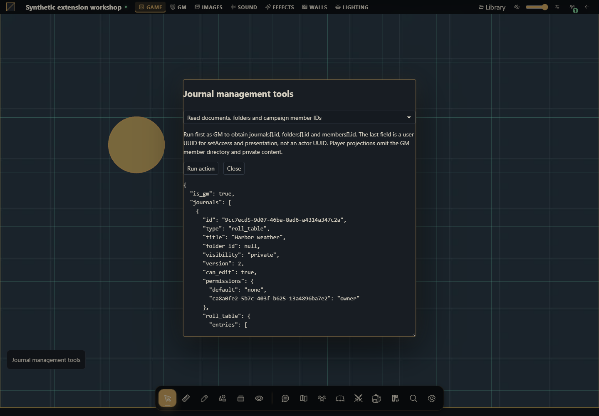

How to create, organize and share journal documents
Build native rich diaries, preserve pages when editing, organize folder trees and control access and presentations.


The project you will build
Begin with the native directory read. Create an original diary, rename it without replacing its pages, move it through a folder tree, grant one player read access and present a public page. The final recipes delete only explicitly confirmed tutorial resources.
Target host: Gravewright 0.3.0. Actions run only when you click Run action, using the signed-in account. The demonstration panel is English. Each recipe specifies inputs and an observable result.
1. Create the files
Create a folder named journal-management. Save the complete files below as UTF-8, or download the project. manifest.json belongs at the root. No npm dependencies or JavaScript build is required.
journal-management/
manifest.json
main.mjs
recipes.mjs
styles.css
LICENSE.txtUse a disposable campaign as GM for complete projections and destructive actions. Copy user UUIDs from members, folder UUIDs from folders and document UUIDs from journals. A diary page ID comes from sections[].id, not a scene or actor ID. Targeted presentation requires the corresponding native installation feature.
2. Package, install and activate
From the project folder, run in PowerShell:
python -m json.tool manifest.json
python -m zipfile -c ../journal-management-1.0.0.zip manifest.json main.mjs recipes.mjs styles.css LICENSE.txt
python -m zipfile -l ../journal-management-1.0.0.zipOn Linux/macOS, replace python with python3 in the same commands. The archive listing must show manifest.json at its root. As installation owner, open Inside → Modules → Install module → Install from ZIP, select the ZIP and click Install. As GM, open the campaign, select its Gravewright button → Extensions and Activate version 1.0.0 of Journal management tools. Close that menu and click Journal management tools. See your first module for screen-by-screen instructions.
The package stays inactive until selected for the table. Test one demonstration extension at a time because their launchers share a position. For changed bytes, increment version to 1.0.1, build another ZIP, install and activate that version; do not edit installed files.
3. Run each recipe
Read documents, folders and campaign member IDs
Run first as GM to obtain journals[].id, folders[].id and members[].id. The last field is a user UUID for setAccess and presentation, not an actor UUID. Player projections omit the GM member directory and private content.
async ({api,signal})=>api.journals.state({}, {signal})Expected result: The authorized directory with native types, permissions and feature flags.
How to verify: Open the native directory or document and compare its server state. Compare GM and player views; only authorized content may appear.
Create a real block-document diary
Create a diary, then fill content using the supported gw-journal-doc-v1 envelope. Plain HTML or a Markdown string is not that rich-document format. Copy the returned ID.
async ({api,signal},v)=>{const created=await api.journals.create({title:v.title,journal_type:'diary'},{signal,requestId:crypto.randomUUID()});try{const doc=text=>({format:'gw-journal-doc-v1',version:1,doc:{type:'doc',content:[{type:'paragraph',content:[{type:'text',text}]}]}});await api.journals.update({journal_id:created.journal_id,version:created.version,title:v.title,data:{content:doc(v.body),cover:{},sections:[],gm:{}}},{signal,requestId:crypto.randomUUID()});return api.journals.get(created.journal_id,{}, {signal});}catch(error){throw new Error('Diary '+created.journal_id+' exists; setup failed: '+(error.code||error.message)+'. Inspect it before creating another.');}}Expected result: A private diary whose native editor displays the original paragraph.
How to verify: Open the native directory or document and compare its server state. Compare GM and player views; only authorized content may appear.
Rename a diary without erasing its pages or GM notes
As GM, reconstruct the write shape from the read projection: content_doc becomes content, cover_image becomes cover, and diary.gm becomes gm. Preserve sections and the exact read version. This example deliberately targets diary, not quest/table shapes.
async ({api,context,signal},v)=>{if(context.role!=='gm')throw new Error('Use GM to preserve the full diary projection.');const row=await api.journals.get(v.id,{}, {signal});if(row.type!=='diary')throw new Error('Choose a diary.');const data={content:row.content_doc,cover:row.cover_image,sections:row.sections,gm:row.diary.gm};await api.journals.update({journal_id:row.id,version:row.version,title:v.title,visibility:row.visibility,data},{signal,requestId:crypto.randomUUID()});return api.journals.get(row.id,{}, {signal});}Expected result: Only the title changes; all authorized page and GM data remains.
How to verify: Open the native directory or document and compare its server state. Compare GM and player views; only authorized content may appear.
Move a document into a folder or the root
As GM, use a folder UUID from the directory. Blank target selects the root. This changes organization rather than visibility or content.
async ({api,signal},v)=>{await api.journals.move({journal_id:v.id,target_folder_id:v.folderId.trim()||null},{signal,requestId:crypto.randomUUID()});return api.journals.get(v.id,{}, {signal});}Expected result: The document folder_id becomes the target UUID or null.
How to verify: Open the native directory or document and compare its server state. Compare GM and player views; only authorized content may appear.
Grant or revoke one member’s journal access
Use members[].id from the GM directory. none denies access, limited allows listing, read opens authorized content, and owner permits editing under server rules. This persists a grant, unlike a temporary presentation.
async ({api,context,signal},v)=>{if(context.role!=='gm')throw new Error('GM required.');if(!['none','limited','read','owner'].includes(v.level))throw new Error('Invalid access level.');await api.journals.setAccess({journal_id:v.id,target_user_id:v.userId,access_level:v.level},{signal,requestId:crypto.randomUUID()});return api.journals.get(v.id,{}, {signal});}Expected result: A native per-user access grant for that journal.
How to verify: Check the targeted player’s list and editor. GM-only blocks must remain hidden even after read access.
Present a player-filtered document or public page
Leave user UUID blank to present to everyone, or target one campaign user when targeted handouts are enabled. Optional page ID must refer to a public diary page. ownership unchanged avoids a permanent access change.
async ({api,context,signal},v)=>{if(context.role!=='gm')throw new Error('GM required.');const payload={journal_id:v.id,ownership:'unchanged',...(v.userId.trim()?{targets:[v.userId.trim()]}:{}),...(v.pageId.trim()?{page_id:v.pageId.trim()}:{})};return api.journals.present(payload,{signal,requestId:crypto.randomUUID()});}Expected result: A native presentation is delivered to recipients with short-lived read access and player-filtered content.
How to verify: Confirm receipt in the targeted account and no delivery to another. Try a GM-only page and expect rejection.
Create a folder with a validated color
Enter a name and optionally an existing parent UUID. The native color is a six-digit hexadecimal string. Copy result.folder_id.
async ({api,signal},v)=>{const result=await api.journals.createFolder({name:v.name,color:'#c09a5a',parent_id:v.parentId.trim()||null},{signal,requestId:crypto.randomUUID()});return {result,directory:await api.journals.state({}, {signal})};}Expected result: One new folder, attached to the selected parent.
How to verify: Open the native directory or document and compare its server state. Compare GM and player views; only authorized content may appear.
Rename and recolor a folder
Use the folder ID created above. This API requires both name and color, so send them explicitly.
async ({api,signal},v)=>{await api.journals.updateFolder({folder_id:v.folderId,name:v.name,color:v.color},{signal,requestId:crypto.randomUUID()});return api.journals.state({}, {signal});}Expected result: The same folder ID with its new name and color.
How to verify: Open the native directory or document and compare its server state. Compare GM and player views; only authorized content may appear.
Move a folder without creating cycles
Choose an existing folder and new parent. A blank parent moves to root. The server rejects moving a folder into itself or a descendant.
async ({api,signal},v)=>{await api.journals.moveFolder({folder_id:v.folderId,target_parent_id:v.parentId.trim()||null},{signal,requestId:crypto.randomUUID()});return api.journals.state({}, {signal});}Expected result: The folder has a new parent_id while its children stay attached.
How to verify: Create a child and attempt to move its parent into it; the operation must fail without changing the tree.
Delete a folder while retaining its contents
Use only the synthetic folder and type its exact name. Native deletion reparents its child folders and documents to its former parent. It does not recursively delete journals.
async ({api,signal},v)=>{const state=await api.journals.state({}, {signal});const folder=state.folders.find(folder=>folder.id===v.folderId);if(!folder)throw new Error('Folder not found.');if(v.confirmation!==folder.name)throw new Error('Type the exact folder name.');await api.journals.deleteFolder({folder_id:folder.id},{signal,requestId:crypto.randomUUID()});return api.journals.state({}, {signal});}Expected result: The folder disappears, while its documents remain in the parent or root.
How to verify: Open the native directory or document and compare its server state. Compare GM and player views; only authorized content may appear.
Delete one disposable document and refresh the list
As GM, type the exact title of the tutorial document. This deletes that journal and related native references; it is different from removing a board link.
async ({api,context,signal},v)=>{if(context.role!=='gm')throw new Error('GM required.');const row=await api.journals.get(v.id,{}, {signal});if(v.confirmation!==row.title)throw new Error('Type the exact document title.');await api.journals.delete({journal_id:row.id},{signal,requestId:crypto.randomUUID()});return api.journals.list({}, {signal});}Expected result: The returned list omits the deleted UUID.
How to verify: Open the native directory or document and compare its server state. Compare GM and player views; only authorized content may appear.
4. Understand and adapt the complete files
main.mjs renders the launcher and form. recipes.mjs owns behavior: change the chosen recipe’s run function while keeping its signature. The form passes real number, boolean and File values, blocks overlapping requests and renders using textContent. It does not evaluate user-provided code. api, host, assets and storage belong to the mount; signal cancels work on deactivation. The modal stays open during pending work and is released when the mount aborts. Each business function remains responsible for revisions, permissions and transaction sequencing.
manifest.json
{
"id": "tutorial.journal-management",
"name": "Journal management tools",
"version": "1.0.0",
"sdk": {
"requires": ">=1.0.0 <2.0.0",
"tested": "1.0.0"
},
"entry": "main.mjs",
"description": "Build native rich diaries, preserve pages when editing, organize folder trees and control access and presentations.",
"author": "Gravewright documentation",
"license": "MIT"
}main.mjs
import {recipes} from './recipes.mjs';
export default {
start({styles}) { styles.use('styles.css'); },
register({register}) {
register("table.interface", ({root,api,host,assets,storage,context,events,viewport,signal,onDispose}) => {
const doc=root.ownerDocument;
const button=doc.createElement('button');
button.type='button';button.className='tutorial-launcher';
button.textContent="Journal management tools";
root.append(button);
for(const type of ['pointerdown','mousedown'])button.addEventListener(type,event=>event.stopPropagation(),{signal});
let modal,pending=false;
button.addEventListener('click',event=>{
event.stopPropagation();
if(modal?.isConnected) { modal.focus();return; }
const panel=doc.createElement('section');
panel.className="tutorial-workbench-journal-management";
panel.setAttribute('role','dialog');panel.setAttribute('aria-modal','true');
panel.setAttribute('aria-label',button.textContent);panel.tabIndex=-1;
const title=doc.createElement('h2');title.textContent=button.textContent;panel.append(title);
const choose=doc.createElement('select');choose.setAttribute('aria-label','Action');
for(const recipe of recipes) {
const option=doc.createElement('option');option.value=recipe.id;option.textContent=recipe.label;choose.append(option);
}
const form=doc.createElement('form'),fields=doc.createElement('div');
const description=doc.createElement('p');
const run=doc.createElement('button');run.type='submit';run.textContent='Run action';
const close=doc.createElement('button');close.type='button';close.textContent='Close';
const output=doc.createElement('pre');output.setAttribute('role','status');output.setAttribute('aria-live','polite');
form.append(description,fields,run,close,output);panel.append(choose,form);
function renderFields(){
const recipe=recipes.find(item=>item.id===choose.value);fields.replaceChildren();
description.textContent=recipe.description;
for(const field of recipe.fields||[]) {
const label=doc.createElement('label');label.textContent=field.label;
const input=doc.createElement('input');input.name=field.name;input.type=field.type||'text';
if(field.type==='number')input.step=String(field.step??'any');
if(field.type==='checkbox')input.checked=!!field.value;
else if(field.type!=='file')input.value=String(field.value??'');
input.required=!!field.required;
if(field.accept)input.accept=field.accept;
label.append(input);fields.append(label);
}
output.textContent='';
}
choose.addEventListener('change',renderFields,{signal});renderFields();
form.addEventListener('submit',async event=>{
event.preventDefault();if(pending)return;
const recipe=recipes.find(item=>item.id===choose.value),values={};
for(const input of fields.querySelectorAll('input')) {
values[input.name]=input.type==='file'?input.files[0]:input.type==='checkbox'?input.checked:input.type==='number'?Number(input.value):input.value;
}
pending=true;choose.disabled=true;run.disabled=true;close.disabled=true;
for(const input of fields.querySelectorAll('input'))input.disabled=true;
output.textContent='Running…';
try {
const value=await recipe.run({api,host,assets,storage,context,events,viewport,signal,onDispose},values);
if(!signal.aborted)output.textContent=typeof value==='string'?value:JSON.stringify(value??null,null,2);
} catch(error) {
if(!signal.aborted)output.textContent=String(error.code||error.message||'unavailable');
} finally {
pending=false;
if(!signal.aborted){choose.disabled=false;run.disabled=false;close.disabled=false;for(const input of fields.querySelectorAll('input'))input.disabled=false;}
}
},{signal});
close.addEventListener('click',()=>void modal.close(),{signal});
modal=api.ui.openModal(panel,{canClose:()=>!pending||signal.aborted});
},{signal});
onDispose(()=>{button.remove();if(modal)void modal.close();});
});
},
stop() {}
};recipes.mjs
export const recipes=[
{
id:"directory",
label:"Read documents, folders and campaign member IDs",
description:"Run first as GM to obtain journals[].id, folders[].id and members[].id. The last field is a user UUID for setAccess and presentation, not an actor UUID. Player projections omit the GM member directory and private content.",
fields:[],
run:async ({api,signal})=>api.journals.state({}, {signal})
},
{
id:"create-diary",
label:"Create a real block-document diary",
description:"Create a diary, then fill content using the supported gw-journal-doc-v1 envelope. Plain HTML or a Markdown string is not that rich-document format. Copy the returned ID.",
fields:[
{
"name": "title",
"label": "Original diary title",
"type": "text",
"value": "Harbor log",
"required": true
},
{
"name": "body",
"label": "Original body text",
"type": "text",
"value": "The harbor beacon needs repair.",
"required": true
}
],
run:async ({api,signal},v)=>{const created=await api.journals.create({title:v.title,journal_type:'diary'},{signal,requestId:crypto.randomUUID()});try{const doc=text=>({format:'gw-journal-doc-v1',version:1,doc:{type:'doc',content:[{type:'paragraph',content:[{type:'text',text}]}]}});await api.journals.update({journal_id:created.journal_id,version:created.version,title:v.title,data:{content:doc(v.body),cover:{},sections:[],gm:{}}},{signal,requestId:crypto.randomUUID()});return api.journals.get(created.journal_id,{}, {signal});}catch(error){throw new Error('Diary '+created.journal_id+' exists; setup failed: '+(error.code||error.message)+'. Inspect it before creating another.');}}
},
{
id:"rename-diary",
label:"Rename a diary without erasing its pages or GM notes",
description:"As GM, reconstruct the write shape from the read projection: content_doc becomes content, cover_image becomes cover, and diary.gm becomes gm. Preserve sections and the exact read version. This example deliberately targets diary, not quest/table shapes.",
fields:[
{
"name": "id",
"label": "Document UUID",
"type": "text",
"value": "",
"required": true
},
{
"name": "title",
"label": "New diary title",
"type": "text",
"value": "Harbor log, reviewed",
"required": true
}
],
run:async ({api,context,signal},v)=>{if(context.role!=='gm')throw new Error('Use GM to preserve the full diary projection.');const row=await api.journals.get(v.id,{}, {signal});if(row.type!=='diary')throw new Error('Choose a diary.');const data={content:row.content_doc,cover:row.cover_image,sections:row.sections,gm:row.diary.gm};await api.journals.update({journal_id:row.id,version:row.version,title:v.title,visibility:row.visibility,data},{signal,requestId:crypto.randomUUID()});return api.journals.get(row.id,{}, {signal});}
},
{
id:"move-document",
label:"Move a document into a folder or the root",
description:"As GM, use a folder UUID from the directory. Blank target selects the root. This changes organization rather than visibility or content.",
fields:[
{
"name": "id",
"label": "Document UUID",
"type": "text",
"value": "",
"required": true
},
{
"name": "folderId",
"label": "Target folder UUID, blank for root",
"type": "text",
"value": "",
"required": false
}
],
run:async ({api,signal},v)=>{await api.journals.move({journal_id:v.id,target_folder_id:v.folderId.trim()||null},{signal,requestId:crypto.randomUUID()});return api.journals.get(v.id,{}, {signal});}
},
{
id:"access",
label:"Grant or revoke one member’s journal access",
description:"Use members[].id from the GM directory. none denies access, limited allows listing, read opens authorized content, and owner permits editing under server rules. This persists a grant, unlike a temporary presentation.",
fields:[
{
"name": "id",
"label": "Document UUID",
"type": "text",
"value": "",
"required": true
},
{
"name": "userId",
"label": "Campaign user UUID",
"type": "text",
"value": "",
"required": true
},
{
"name": "level",
"label": "none/limited/read/owner",
"type": "text",
"value": "read",
"required": true
}
],
run:async ({api,context,signal},v)=>{if(context.role!=='gm')throw new Error('GM required.');if(!['none','limited','read','owner'].includes(v.level))throw new Error('Invalid access level.');await api.journals.setAccess({journal_id:v.id,target_user_id:v.userId,access_level:v.level},{signal,requestId:crypto.randomUUID()});return api.journals.get(v.id,{}, {signal});}
},
{
id:"present",
label:"Present a player-filtered document or public page",
description:"Leave user UUID blank to present to everyone, or target one campaign user when targeted handouts are enabled. Optional page ID must refer to a public diary page. ownership unchanged avoids a permanent access change.",
fields:[
{
"name": "id",
"label": "Document UUID",
"type": "text",
"value": "",
"required": true
},
{
"name": "userId",
"label": "Target user UUID, blank for everyone",
"type": "text",
"value": "",
"required": false
},
{
"name": "pageId",
"label": "Public diary page ID, optional",
"type": "text",
"value": "",
"required": false
}
],
run:async ({api,context,signal},v)=>{if(context.role!=='gm')throw new Error('GM required.');const payload={journal_id:v.id,ownership:'unchanged',...(v.userId.trim()?{targets:[v.userId.trim()]}:{}),...(v.pageId.trim()?{page_id:v.pageId.trim()}:{})};return api.journals.present(payload,{signal,requestId:crypto.randomUUID()});}
},
{
id:"folder-create",
label:"Create a folder with a validated color",
description:"Enter a name and optionally an existing parent UUID. The native color is a six-digit hexadecimal string. Copy result.folder_id.",
fields:[
{
"name": "name",
"label": "Folder name",
"type": "text",
"value": "Harbor notes",
"required": true
},
{
"name": "parentId",
"label": "Parent folder UUID, optional",
"type": "text",
"value": "",
"required": false
}
],
run:async ({api,signal},v)=>{const result=await api.journals.createFolder({name:v.name,color:'#c09a5a',parent_id:v.parentId.trim()||null},{signal,requestId:crypto.randomUUID()});return {result,directory:await api.journals.state({}, {signal})};}
},
{
id:"folder-update",
label:"Rename and recolor a folder",
description:"Use the folder ID created above. This API requires both name and color, so send them explicitly.",
fields:[
{
"name": "folderId",
"label": "Folder UUID",
"type": "text",
"value": "",
"required": true
},
{
"name": "name",
"label": "New folder name",
"type": "text",
"value": "Harbor archive",
"required": true
},
{
"name": "color",
"label": "Six-digit color",
"type": "text",
"value": "#5f8fba",
"required": true
}
],
run:async ({api,signal},v)=>{await api.journals.updateFolder({folder_id:v.folderId,name:v.name,color:v.color},{signal,requestId:crypto.randomUUID()});return api.journals.state({}, {signal});}
},
{
id:"folder-move",
label:"Move a folder without creating cycles",
description:"Choose an existing folder and new parent. A blank parent moves to root. The server rejects moving a folder into itself or a descendant.",
fields:[
{
"name": "folderId",
"label": "Folder UUID",
"type": "text",
"value": "",
"required": true
},
{
"name": "parentId",
"label": "New parent UUID, blank for root",
"type": "text",
"value": "",
"required": false
}
],
run:async ({api,signal},v)=>{await api.journals.moveFolder({folder_id:v.folderId,target_parent_id:v.parentId.trim()||null},{signal,requestId:crypto.randomUUID()});return api.journals.state({}, {signal});}
},
{
id:"folder-delete",
label:"Delete a folder while retaining its contents",
description:"Use only the synthetic folder and type its exact name. Native deletion reparents its child folders and documents to its former parent. It does not recursively delete journals.",
fields:[
{
"name": "folderId",
"label": "Folder UUID",
"type": "text",
"value": "",
"required": true
},
{
"name": "confirmation",
"label": "Type the exact folder name",
"type": "text",
"value": "",
"required": true
}
],
run:async ({api,signal},v)=>{const state=await api.journals.state({}, {signal});const folder=state.folders.find(folder=>folder.id===v.folderId);if(!folder)throw new Error('Folder not found.');if(v.confirmation!==folder.name)throw new Error('Type the exact folder name.');await api.journals.deleteFolder({folder_id:folder.id},{signal,requestId:crypto.randomUUID()});return api.journals.state({}, {signal});}
},
{
id:"delete-document",
label:"Delete one disposable document and refresh the list",
description:"As GM, type the exact title of the tutorial document. This deletes that journal and related native references; it is different from removing a board link.",
fields:[
{
"name": "id",
"label": "Document UUID",
"type": "text",
"value": "",
"required": true
},
{
"name": "confirmation",
"label": "Type the exact document title",
"type": "text",
"value": "",
"required": true
}
],
run:async ({api,context,signal},v)=>{if(context.role!=='gm')throw new Error('GM required.');const row=await api.journals.get(v.id,{}, {signal});if(v.confirmation!==row.title)throw new Error('Type the exact document title.');await api.journals.delete({journal_id:row.id},{signal,requestId:crypto.randomUUID()});return api.journals.list({}, {signal});}
}
];styles.css
.gw-module-root[data-module-id="tutorial.journal-management"] .tutorial-launcher { position: fixed; left: 16px; bottom: 112px; z-index: 10; padding: var(--space-3); border: 1px solid var(--border); border-radius: var(--radius-md); background: var(--surface); color: var(--text); font-size: 14px; pointer-events: auto; max-width: min(440px, calc(100vw - 32px)); white-space: normal; }
.tutorial-workbench-journal-management { width: min(640px, calc(100vw - 48px)); padding: var(--space-5); font-size: 14px; }
.tutorial-workbench-journal-management label { display: block; margin: var(--space-3) 0; }
.tutorial-workbench-journal-management input, .tutorial-workbench-journal-management select { display: block; width: 100%; margin-top: var(--space-2); }
.tutorial-workbench-journal-management pre { max-height: 360px; max-width: 100%; overflow: auto; white-space: pre-wrap; overflow-wrap: anywhere; }
.tutorial-workbench-journal-management button { margin-right: var(--space-3); }LICENSE.txt
MIT License
Copyright (c) 2026 Gravewright contributors
Permission is hereby granted, free of charge, to any person obtaining a copy
of this software and associated documentation files (the "Software"), to deal
in the Software without restriction, including without limitation the rights
to use, copy, modify, merge, publish, distribute, sublicense, and/or sell
copies of the Software, and to permit persons to whom the Software is
furnished to do so, subject to the following conditions:
The above copyright notice and this permission notice shall be included in all
copies or substantial portions of the Software.
THE SOFTWARE IS PROVIDED "AS IS", WITHOUT WARRANTY OF ANY KIND, EXPRESS OR
IMPLIED, INCLUDING BUT NOT LIMITED TO THE WARRANTIES OF MERCHANTABILITY,
FITNESS FOR A PARTICULAR PURPOSE AND NONINFRINGEMENT. IN NO EVENT SHALL THE
AUTHORS OR COPYRIGHT HOLDERS BE LIABLE FOR ANY CLAIM, DAMAGES OR OTHER
LIABILITY, WHETHER IN AN ACTION OF CONTRACT, TORT OR OTHERWISE, ARISING FROM,
OUT OF OR IN CONNECTION WITH THE SOFTWARE OR THE USE OR OTHER DEALINGS IN THE
SOFTWARE.5. Permissions, failures and final test
Folder operations are not recursive document deletion: deleting a folder reparents its documents and children. Deleting a document is separate and requires exact-title confirmation here. update requires exact version and the correct per-type data envelope; the diary recipe reconstructs its GM projection while keeping pages, cover and private notes. Access persists; a presentation with ownership unchanged gives temporary player-filtered read access. Check targeted/non-targeted users, private pages, tree cycles and stale edits.
How to use AI to extend this project
Extend journal-management on Gravewright 0.3.0 with [one workflow]. Read journals/services.py, documents.py, data.py and presentations.py. Preserve gw-journal-doc-v1, diary read/write shape conversion, exact versions, folder containment, targeted handout access and private content filtering. Deliver complete recipes and tests for GM/player, duplicate moves, rejected cycles, page privacy and separate document versus folder deletion.